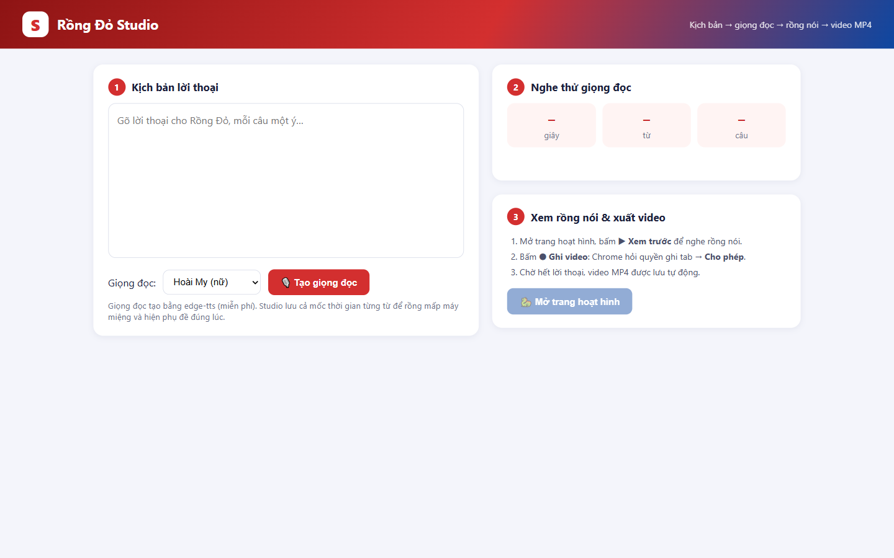
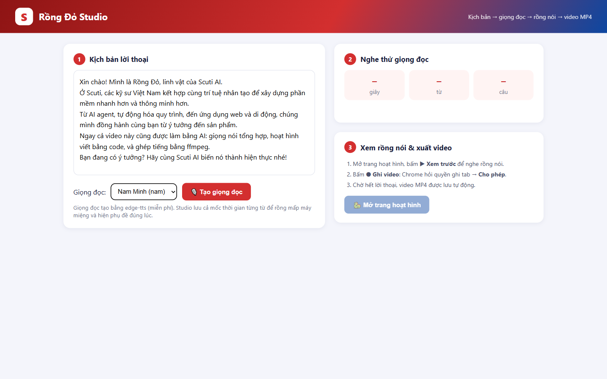
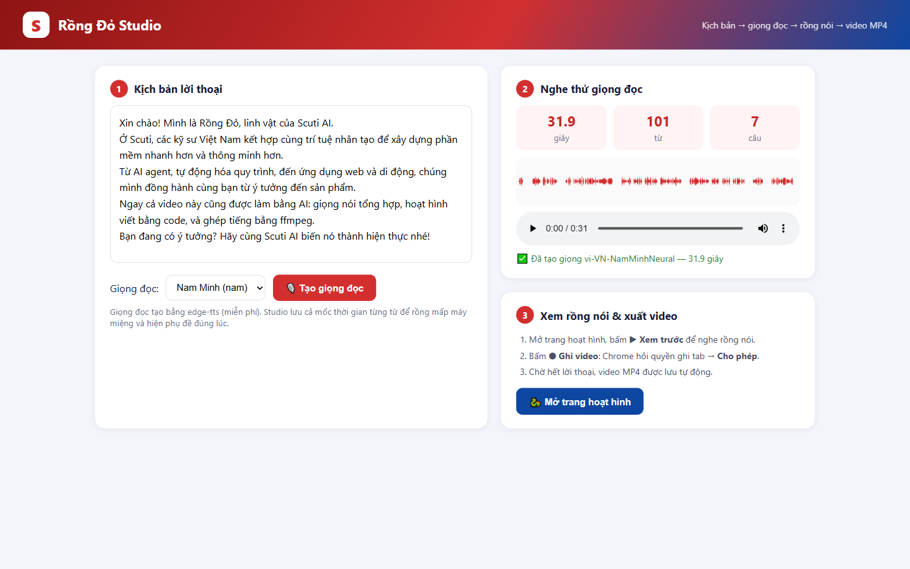
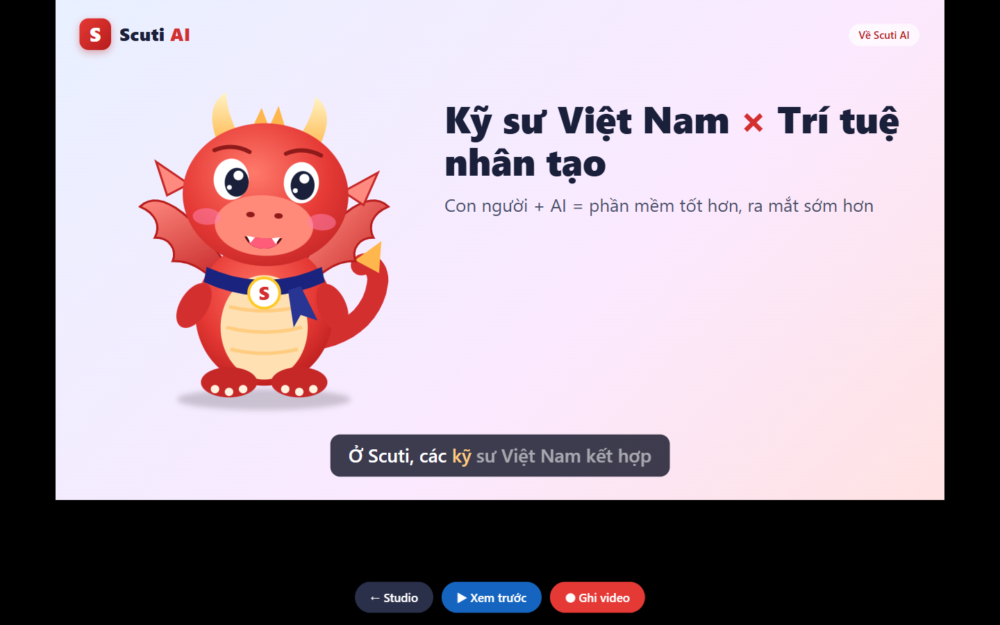
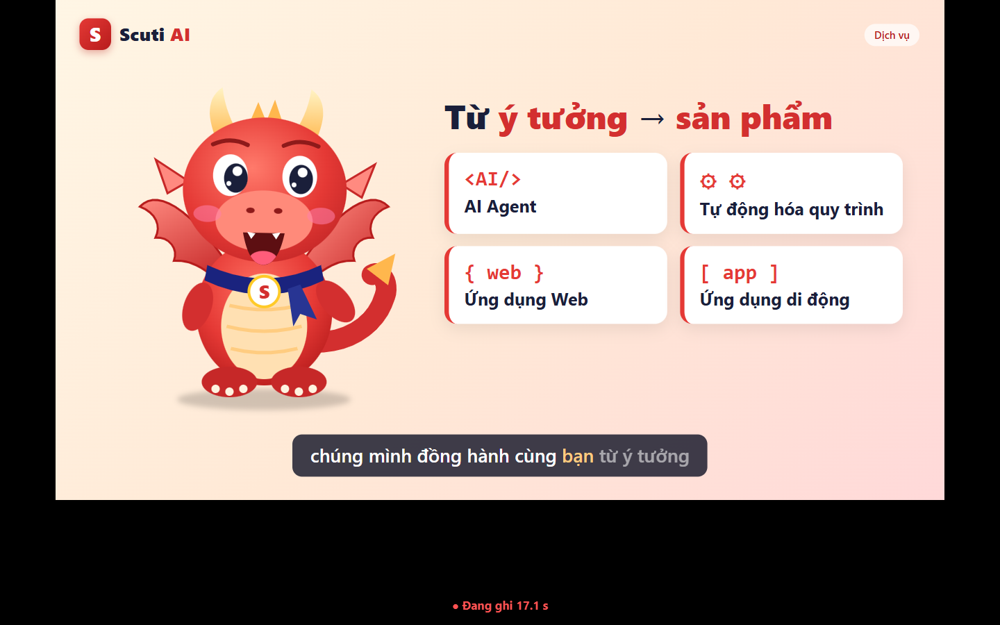
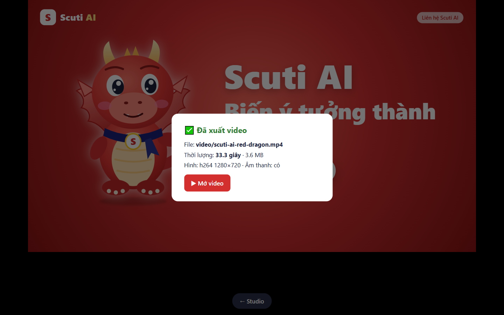
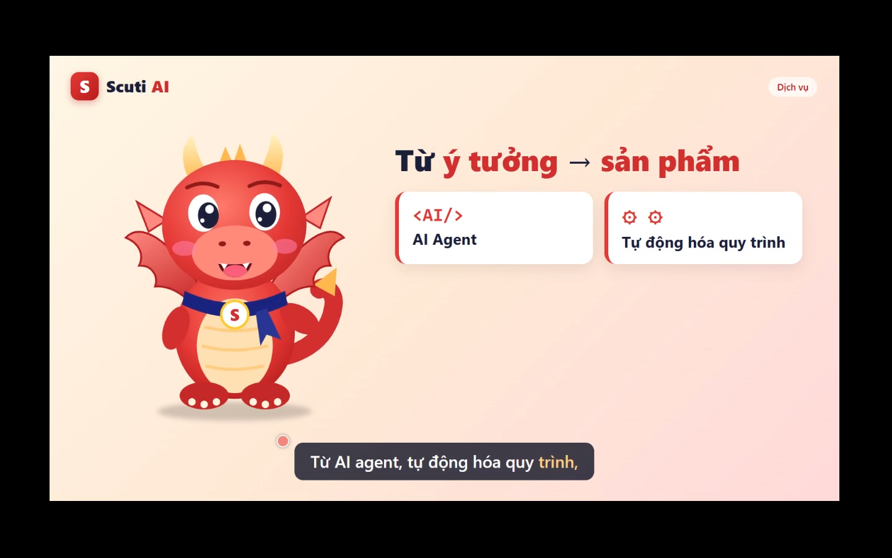

Kịch bản → giọng đọc AI → rồng hoạt hình mấp máy miệng theo giọng → video MP4 33 giây có tiếng. Miễn phí, làm trên máy cá nhân.
Video tham khảo: “Today, Claude killed the video industry...” (kênh RKJ VIDEO). Ý tưởng chính rất đơn giản:
Đưa cho AI kịch bản và giọng nói → AI viết code để dựng hoạt hình khớp với âm thanh → xuất video → tự xem lại và sửa.
| Việc | Công cụ tác giả dùng |
|---|---|
| Viết code dựng video, khớp hình với tiếng | Claude Code (model Claude Opus 5.5) |
| Giọng đọc AI | Fish Audio |
| Nhân vật mấp máy miệng (lip-sync) | Topview |
| Cảnh quay người thật bằng AI | Higgsfield (kết nối qua MCP) |
| Nhạc nền | Artlist |
Trong video, tác giả chỉ cần một prompt nêu rõ thời lượng, nhân vật, lời thoại, giọng nói. Mình viết lại theo cách đó cho Scuti AI và giao cho Claude Code:
Đoạn code quan trọng nhất Claude viết ra là hàm tính độ mở miệng từ âm lượng của file giọng nói. Nhờ nó mà rồng “nói” được mà không cần công cụ lip-sync trả phí:
| Công cụ | Dùng để làm gì |
|---|---|
| Rồng Đỏ Studio (trang web chạy trên máy) | Nơi thao tác: gõ kịch bản, chọn giọng, nghe thử, mở trang hoạt hình |
edge-tts | Đọc kịch bản thành giọng tiếng Việt (miễn phí) và trả về thời điểm của từng từ |
| HTML / SVG / JavaScript | Vẽ Rồng Đỏ, cảnh, phụ đề; miệng mở theo âm lượng giọng |
| Google Chrome | Xem trước và ghi lại tab kèm âm thanh bằng tính năng có sẵn (MediaRecorder) |
ffmpeg | Đổi file ghi được sang MP4 (H.264 + AAC) để xem ở mọi nơi |
Mở terminal trong thư mục dự án, chạy python studio/studio_server.py, rồi mở http://localhost:8765/studio/ trên Chrome.
Màn hình gồm 3 phần: (1) ô kịch bản và chọn giọng, (2) nghe thử giọng đọc, (3) xem rồng nói và xuất video.

Mỗi câu là một cảnh. Mình chọn giọng Nam Minh cho rồng.

Sau vài giây Studio báo kết quả: độ dài giọng đọc, số từ, số câu và hình sóng âm. Mốc thời gian từng từ được lưu lại để rồng mấp máy miệng và chạy phụ đề.

Bấm play trên trình phát để nghe. Nếu chưa ưng thì sửa kịch bản hoặc đổi giọng rồi bấm tạo lại.
Bấm “Mở trang hoạt hình” rồi bấm “▶ Xem trước”: Rồng Đỏ nói, miệng mở theo giọng, phụ đề tô sáng từ đang đọc.

Chrome hỏi quyền ghi lại tab, bấm Cho phép. Hoạt hình chạy lại từ đầu, Chrome ghi cả hình lẫn tiếng. Góc dưới hiện đồng hồ “Đang ghi”. Phần này nằm ngoài khung 1280×720 nên không có trong video.

Hết lời thoại, Studio đổi file ghi sang MP4 và báo: tên file, thời lượng, có âm thanh hay không.

video/scuti-ai-red-dragon.mp4, 33 giây, có âm thanhBấm “▶ Mở video” để xem thành phẩm. Kiểm tra nhanh: miệng rồng có khớp giọng không, phụ đề có đúng từ không, cảnh có chuyển đúng câu không.

Toàn bộ thao tác từ lúc mở Studio đến khi có video MP4 và mở ra xem:
| Video tham khảo (Claude Code + Fish Audio + Topview + Higgsfield) | Cách của mình (Claude Code + edge-tts + HTML/SVG + Chrome) | |
|---|---|---|
| Chi phí | Gói Claude trả phí + credit từng dịch vụ | 0 đồng |
| Giọng nói | Có cảm xúc, có thể clone giọng | Rõ ràng nhưng ngữ điệu còn đều |
| Khẩu hình | Khớp từng âm, dùng được cho mặt người | Theo âm lượng: đủ cho nhân vật hoạt hình |
| Thương hiệu | AI sinh hình có thể lệch màu, logo, chữ | Đúng tuyệt đối màu, logo, chữ tiếng Việt |
| Sửa nội dung | Sinh lại, mỗi lần một khác | Sửa 1 câu kịch bản → tạo giọng → ghi lại (~1 phút) |
Hai cách có chung một nguyên tắc: giọng nói là “xương sống”, hình được code để chạy theo giọng. Khi có ngân sách, chỉ cần thay bước giọng đọc bằng Fish Audio hoặc Azure TTS, các bước khác giữ nguyên.
| Việc hằng ngày | Áp dụng |
|---|---|
| Release note / demo sprint | Rồng Đỏ đọc 30 giây tóm tắt tính năng mới cho mỗi bản phát hành |
| Đào tạo nội bộ | Mỗi quy trình (git flow, bảo mật…) là một kịch bản ngắn; sửa chữ là có video mới |
| Khách hàng Nhật / quốc tế | Đổi sang giọng ja-JP hoặc en-US, phụ đề và thời điểm tự cập nhật |
| Proposal cho khách | Thêm đoạn video linh vật giới thiệu đề xuất, làm trong vài phút |
| Phụ đề cho mọi video | Dùng mốc thời gian từng từ để xuất file phụ đề SRT |